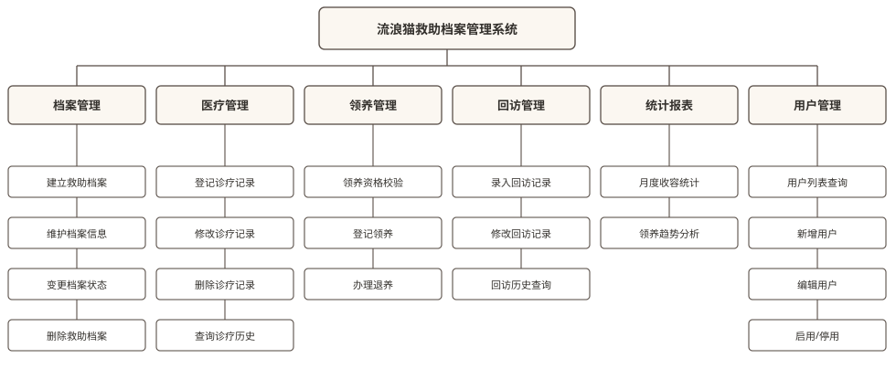
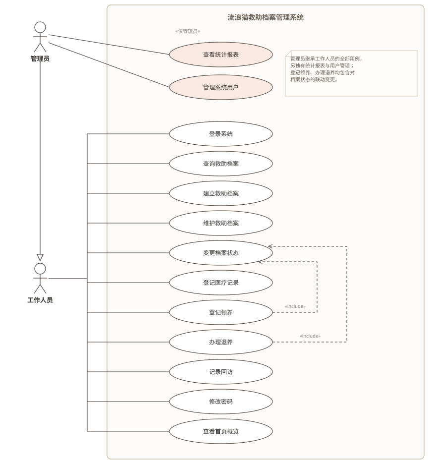
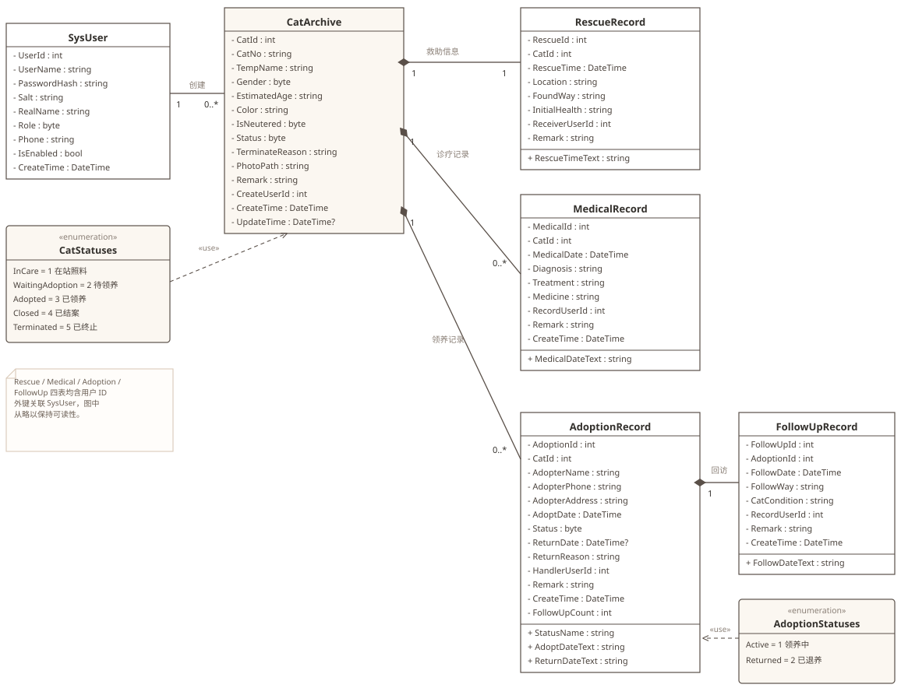
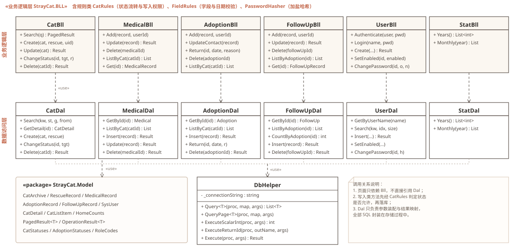
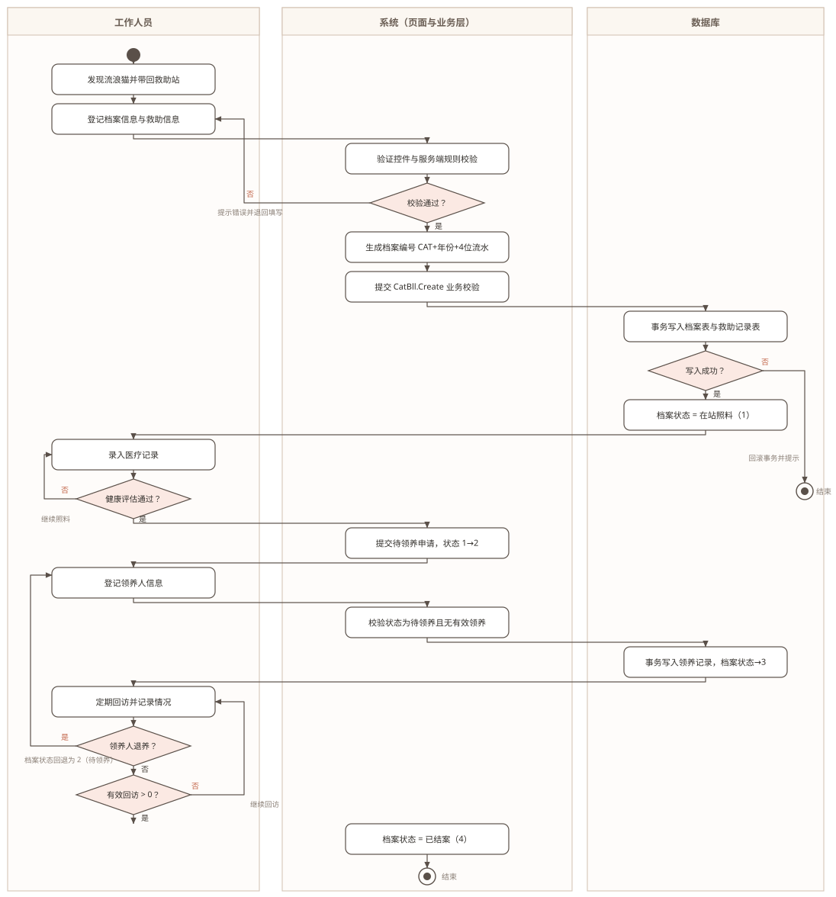
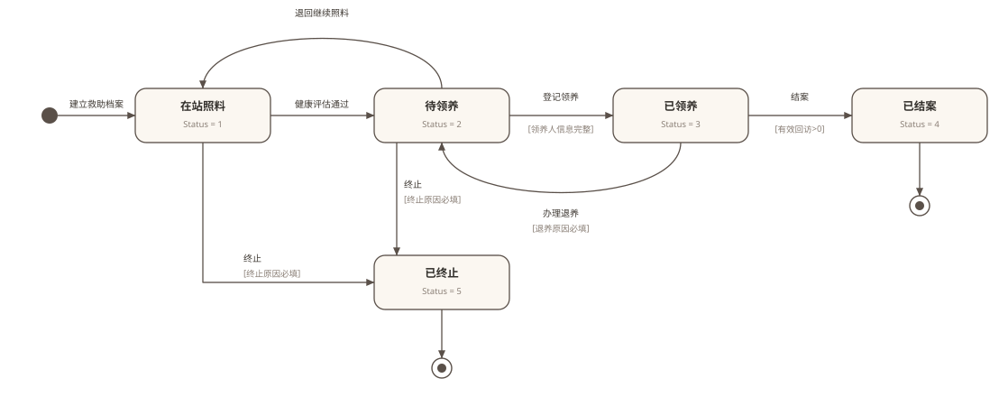
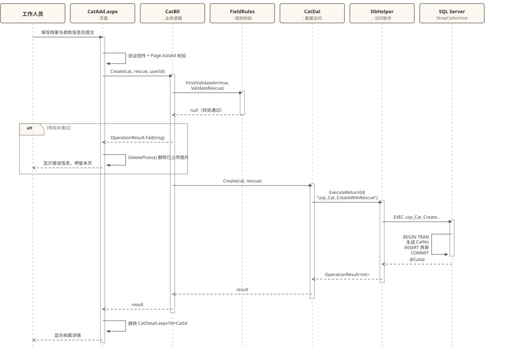
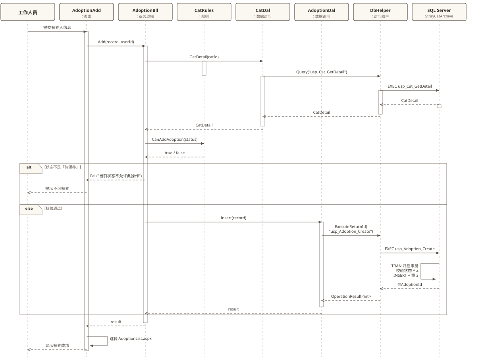

共 8 张图，全部依据 StrayCat.sln 现有代码与 Database/*.sql 的实际实现绘制，不含设想中的功能。

Site.Master 导航菜单一致的 6 个模块，
第三层是可落到具体页面的功能点。
AdminPageBase 拦截。

02_CreateTables.sql 的 6 张表一一对应，
属性即字段，类型做了 C# 映射（TINYINT→byte、DATETIME→DateTime、可空列加 ?）。
RescueRecord 与 CatArchive 是 1 对 1，靠 UQ_RescueRecord_CatId 唯一约束保证。FollowUpRecord 挂在 AdoptionRecord 下，不是直接挂在猫下——这是「回访针对一次领养」的设计选择。CatStatuses（1~5）、AdoptionStatuses（1~2）。
OperationResult<T> 返回值，页面拿不到异常，也拿不到 DAL。DbHelper 是全站唯一拼接 SqlParameter 的地方，杜绝字符串拼接 SQL。CatRules 单独抽出：状态是否允许编辑、是否允许登记领养，全在这一个文件里判定，便于单元测试。
3 → 2 边严格一致。
StrayCat.BLL/CatRules.ChangeStatus()，图中每条迁移都能在代码里找到对应分支。
Messages.FollowUpRequired。CK_CatArchive_Terminate 检查约束兜底。ChangeStatus 里，而由 usp_Adoption_Return 在事务中完成。
CatBll.Create → FieldRules 校验 → CatDal →
DbHelper.ExecuteReturnId → usp_Cat_CreateWithRescue。
PageHelper.DeletePhoto 删掉，避免产生孤儿文件。CAT+年份+4位流水 在事务内用 UPDLOCK, HOLDLOCK 取最大值，并发下不会重号。
CatRules.CanAddAdoption 先挡一次，存储过程再用 UPDLOCK 复查一次。UX_Adoption_OneActive（WHERE Status = 1）保证。docs/uml/png/ 下是 2 倍分辨率图，Word 里按版心宽度（约 16 cm）插入即可，放大不失真。若用 WPS/Word 2016 以上，也可以直接插 SVG。